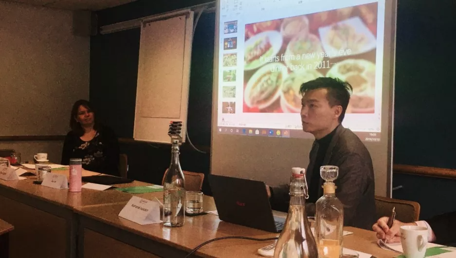

'Genre Fiction in Contemporary China, and its Reception in the West' Symposium
The Leeds Centre for New Chinese Writing
10th - 11th October 2019

'Genre Fiction in Contemporary China, and its Reception in the West' symposium at The Leeds Centre for New Chinese Writing took place from Thursday 10 - Friday 11 October. Its aims were to 'explore what genres mean, and how they are useful, looking at the stories being written, translated and read'. A varied participation of authors, translators, publishers, and academics gathered for presentations and roundtable discussions.
Here's our Lyu Guangzhao's report in Chinese from the conference via WeChat! 会议回顾 | 利兹大学：当代中国类型文学及海外接受.
会议回顾 | 利兹大学：当代中国类型文学及海外接受
Original 老吕 in UK 科幻研究在伦敦 2019-10-13在本周四和周五（10月10日和11日)，由利兹大学当代华语文学研究中心(The Leeds Centre for New Chinese Writing)组织的学术论坛“当代中国类型文学及海外接受”(Genre Fiction in Contemporary China, and its Reception in the West)在利兹北边的某一庄园酒店举行（就是图里那家，省去名字以避广告之嫌）。
论坛最让人印象深刻之处是其提供的VIP级别的会议餐和住宿是所邀请到的重量级嘉宾，包括著名中国科幻作家陈楸帆、夏笳，美国著名汉学家金介甫(Jeffery C.Kinkley)，美国著名科幻学者蔼孙那檀(Nathaniel Isaacson)，知名文学译者Emily Jones（何家弘《性之罪》）; Nicky Harman （贾平凹《倒流河》）; Michelle Deeter （冯唐《北京北京》）; Nick Stember（董启章《乱牙》）; Brigitte Duzan（盛可以《弥留之际》）；Helen Wang（曹文轩《青铜葵花》），以及关注中国武侠、科幻、网络文学以及连环画等通俗艺术形式的博士研究生（皇家霍洛威大学的Yen Ooi；利兹大学的单筱丹、乔鹏；我老吕；以及上面提到的Nick Stember，他同时还是剑桥大学东亚系的在读PhD）。此外，专注中国类型文学的两家出版社Head of Zeus和Alain Charles Asia同样也参与了讨论。
图：Nick Stember同学的Twitter
本次论坛以圆桌讨论为主，因此很难记录所有参与者的观点，这里老吕只是记录了四次主旨演讲中讨论的内容。
蔼孙那檀 (Nathaniel Isaacson)
“Developmentalism and Scientific Aesthetics: Contextualising Contemporary Science-Fiction” / “发展主义与科学美学：解读当代中国科幻”首先，著名科幻学者，北卡罗来纳州立大学副教授蔼孙那檀介绍了自己的学术著作《天朝上国：中国科幻小说溯源》(Celestial Empire: The Emergence of Chinese Science Fiction)，并探讨了韩松的作品《地铁》。他强调，在这个故事中，封闭的不同地铁车厢象征了不同的“发展的审美”(Developmental Aesthetics)，并由此出发，在更广的层面上讨论了中国特色社会主义中体现的特殊美学与我们所处的“人类世”(Anthropocene)不同的互动关系。在《地铁》中，个体的主体性被大幅削弱，作者用大量笔墨描写了人们“肉体”之间的接触，但不论是故事主角还是其他辅助人物，都没有体现出清晰的自由意志。
《天朝上国》是中国晚清科幻小说的重要文献
蔼孙那檀随后又以刘慈欣的《流浪地球》举例，比较了小说和电影情节和人物刻画方面的不同，并由此引出大刘的另外两部作品《太原之恋》与《乡村教师》。基于这三个故事，他详细论述了刘慈欣在其不同作品中表现出的“末世观”。在引用网络上对于《流浪地球》批判性的评论之后，蔼孙那檀认为这个故事体现了刘慈欣某种程度上的保守主义，即教育程度较低的普通民众会动摇精英阶层的统治，但其自身却缺乏治理国家的基本素质。小说里的群众轻而易举被别有用心的谣言所蛊惑，揭竿而起推翻政府的同时却发现支持自己暴动的原因本身竟是一个天大的谎言。这里，Isaacson将刘慈欣视为“中国新右翼”(China New Right)的代表人物之一，并谈到了他的诸多作品在中国“软实力”的推广中起到的关键作用。
《流浪地球》的电影只是故事叙事中很小的一个段落
在讨论刘慈欣作品中诸多政治学元素之后，Isaacson将视角放在了一百年前的晚清时期，并通过当时的杂志、插画和海报中描绘的中国与以科技所代表的“现代性”之间相互的辩证影响。他着重探讨了“火车”在晚清中国巨大的革命性影响，指出了现代化交通工具本身所具有的颠覆性力量。最后他指出，“火车”的形象和文学与艺术刻画只是“现代性”不同的表现方式，但“谁拥有铁路”实际上是讨论晚清社会与文化形态的重要主题。

陈楸帆
"Stranger than Fiction: What happens to E-waste?" / “比小说更小说的电子垃圾故事”陈楸帆首先介绍了自己的代表作《荒潮》得以出版的来龙去脉，并表示自己非常荣幸能够看到这个故事被翻译到众多语言，并得到来自科幻圈内外诸多人士的关注。他说起小说中“硅屿”与现实中“贵屿”的关系，讲到在构思《荒潮》之前自己并不知道世界最大的电子垃圾回收中心居然就在离自己家乡几十公里的地方。他亲自探访，发现绝大多数垃圾回收工人并没有穿戴任何防护工具，赤裸裸地暴露在环境污染所带来的风险之中。
《荒潮》出新版啦！！
他随后谈到了现今世界垃圾回收产业繁荣的现状，通过收集各种数据，陈楸帆发现每年垃圾回收产业能够涉及高达550亿欧元的利润。因此，垃圾回收并不仅仅是环境政策的一部分，更涉及了复杂而微妙的政治经济的博弈。虽然越来越多的国家正在制定比较规范的法律法规来引导垃圾回收产业的发展，但“道高一尺魔高一丈”，在地下层面活跃着大量不为人知的非法走私和贸易，从而规避政府的统筹管理。但在贵屿，近些年中国政府在此的治理卓有成效，空气、土壤、水源的污染得到了非常有效的控制，环境问题也得到了肉眼可见的改善。
在论坛最后，陈楸帆分享了自己的故事《开光》，收录在刘宇昆翻译的作品集《碎星星》(Broken Stars)中
最后，陈楸帆表示，科幻小说作为“推测类”小说的重要载体，承担着重要的社会责任。他将自己试图向人们传递到信息融入在自己的作品中，希望科幻作品能够为中国环境问题的改善，以及其他重要的问题施加潜移默化的影响。在简要介绍中国“科技文艺复兴”(Technology Renaissance)与“城市升维”(Ascending City)这两个术语后，陈楸帆提及了科技对于个人生活与个人主体性产生的转变性力量，并强调了这种力量在中国与现代性的互动中体现的重要作用。
夏笳
“Madman as Hero” in Contemporary Chinese SF" / “当代中国科幻中的‘狂人英雄’”
夏笳从自己的博士论文开始谈起，讲到“狂人”(Madman)这个概念在科幻作品中不同的刻画方式。她首先以漫威电影中像灭霸这样的超级反派为例，指出了超级英雄与超级反派之间“理智”与“非理智”之间的互动关系。她随后详细探讨了汤姆·戈德温的《冷酷的方程式》，故事中飞船的驾驶员基于一种非常功利主义的思考方式，将偷渡的小女孩踢出了飞船的空气闸。她将这个故事与厄修拉·勒古恩的《离开奥梅拉斯的人》（The Ones Who Walk Away from Omelas）相联系，比较了两者之间“狂人”形象的不同表现。
《冷酷的方程式》还有电影版！1996年12月在美国上映
由此出发，夏笳探讨了鲁迅的著名作品《狂人日记》，并强调了故事中涉及的“吃人”元素。在这里，读者能够听到来自“狂人”与“普通人”对于同一件事物的不同理解，并通过自己的偏好和选择加入到故事的叙事当中。她随后将鲁迅的“吃人”隐喻与当代中国科幻作品相联系，并以刘慈欣的《宇宙坍缩》、陈楸帆的《霾都》，以及夏笳自己的《2044春节旧事》中第四个小故事“情人节”。在这些作品中，刘慈欣笔下的狂人形象有力而专断，他们面临着与《冷酷的方程式》中飞行员同样的选择困境，但在后面的两个故事中，主人公有着某些“狂人”的特征，但却以更为委婉、微妙的方式向他人施加着自身的影响。夏笳认为，这些情节与人物的不同，表现出科幻作品内在的多种可能性，并认可了这些可能性对于探讨诸多社会热点议题的贡献。
在《2044春节旧事》的后记中，夏笳提到整个故事的结构受到了《黑镜》的启发
金介甫(Jeffrey C. Kinkley)
“A Popular Genre: The Ex-China Mystery Novel” / “通俗类型：前中国悬疑小说”论坛的最后一位进行主旨演讲的是著名汉学家金介甫教授(Jeffrey C. Kinkley)，他首先介绍了中国与西方“犯罪小说”(crime fiction)不同的发展历史，以及“类型文学”(genre literature)与“主流文学”相比在图书市场中所受到的偏见。因此，他介绍了裘小龙的诸多作品，认为作者邱小龙一直以来都在试图使类型文学超越之前提到的市场偏见，从而能够得到更多主流文学读者的认可。金介甫教授进而讲到，正是因为科幻小说近年来在中国的繁荣，通俗文学作品也逐渐能够从“地下”走到“地上”，也获得了主流文学界的关注。
随后，教授详细探讨了“奇幻”、“玄幻”、“仙幻”与“仙侠”之间的联系和区别，以及同人小说和“YY”小说对于上述类型的影响。他引用王德威教授在《被压抑的现代性》中提到的晚清小说里经常出现的几个常见主题，包括“狭邪”(Depravity Romance)、“狭义公案”(Chivalric and Court-case Cycles)、“丑怪谴责or黑幕谴责”(Grotesque Expose)与“科幻奇谭”(Science Fantasy)，并指出了这些较为“现代”的主题所蕴含的深远历史根源。教授进一步梳理了这些主题相互之间的联系，以及它们在五四运动与白话文运动之后的转变和发展。
王德威教授的《被压抑的现代性》是晚清中国文学研究的里程碑
在以著名侦探小说家程小青为例简要谈及毛时代的通俗文学之后，金介甫教授讲重点放在了21世纪中国通俗文学的现状。他提到了周浩辉、刘震云、松鹰、王朔、何家弘等作者的诸多作品，以及这些作品在西方世界的接受，并且指出几个颇有意思的现象：第一，很多中国的侦探与犯罪小说都在国外出版，而在国内的知名度不高；第二，很多作品的作者多多少少都有流亡经历，并且主要由英文写就，面向英文读者。他还总结了中国侦探小说中出现的警探形象，将其归为两个大类，即“职业侦探英雄”(Professional Chinese Detective Heroes)以及“草根探险英雄”(Beset, Out-of-Place Adventurer Heroes)。这些不同的标签共同构成了中国悬疑类小说的类型框架，是中国类型文学研究重要的参考内容。
此外，Angus Stewart的个人播客"The Translated Chinese Fiction Podcast"也是中国类型文学在英国推广的平台之一
论坛结束之后，陈楸帆与夏笳也应曼彻斯特大学孔子学院之邀参加曼彻斯特文学节的相关活动，下面放点照片好了：